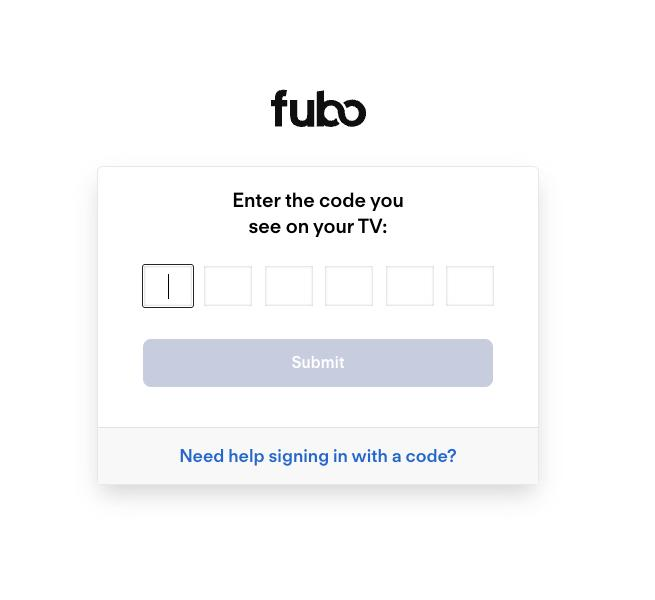

How to Redeem Fubo TV Activation Codes
Complete walkthrough explaining how to redeem Fubo TV activation codes on Roku, Fire TV Stick, Apple TV, Smart TVs, and streaming devices.
Read full guide →Learn how to complete Fubo TV activation, redeem Fubo TV activation codes, setup Roku, Fire TV Stick, Apple TV, compare the cost of Fubo TV plans, and troubleshoot streaming problems.
Read the Activation Guide →
StreamActivate Guide is an independently operated informational website designed to help users understand Fubo TV activation, redeem Fubo TV codes, device setup, troubleshooting, and streaming support.
Whether you use Roku, Fire TV Stick, Apple TV, Android TV, or a Smart TV, our step-by-step instructions make activating live TV streaming services easier through fubotv.com/connect.
Select your streaming media player to see detailed step-by-step setup guides, troubleshooting steps, and activation details.
Configure fubo.tv/connect on your Roku Stick, Express, or Premiere. Learn channel installation steps and activation code entry.
View Roku Steps →Setup instructions for Fire TV Stick 4K, Cube, and Fire TV Edition. Learn how to search the Appstore and input link credentials.
View Fire TV Steps →Redeem your active subscription codes on tvOS Apple TV players. Complete app installation from the App Store and activate seamlessly.
View Apple TV Steps →Complete walkthrough explaining how to redeem Fubo TV activation codes on Roku, Fire TV Stick, Apple TV, Smart TVs, and streaming devices.
Read full guide →Compare the cost of Fubo TV plans, available channels, DVR storage, simultaneous streams, and supported devices.
Read full article →Fix expired activation codes, login problems, buffering, streaming errors, and network issues quickly.
Read full article →